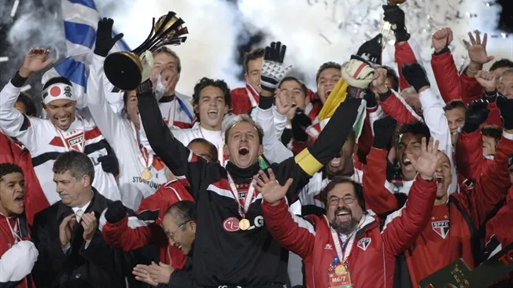
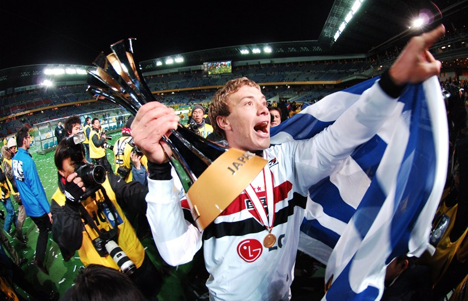

20 anos da nossa conquista histórica, o tricampeonato mundial! O São Paulo enfrentou o Liverpool no Estádio Internacional de Yokohama, no Japão, e venceu por 1 a 0, com gol antológico de Mineiro

Há exatos 20 anos, o mundo foi pintado de preto, vermelho e branco. Em 18 de dezembro de 2005, o São paulo venceu o Liverpool por 1 a 0 e conquistou o tricampeonato mundial. Para relembrar aquela conquista e a temporada em que o Tricolor se consolidou como "soberano", o Lance! conversou com exclusividade com Amoroso, titular e peça fundamental da campanha histórica.
Antes de tudo, é preciso voltar no tempo. Voltar à história de um São paulo que, ao ser comparado com o de hoje, parece distante, mas segue extremamente vivo no imaginário da torcida. Tudo isso em um contexto diferente. Naquele ano, a Fifa passou a assumir integralmente a organização do Mundial de Clubes, após anos dividindo a promoção do torneio com a Uefa e a Conmebol. Com um novo formato, reunindo campeões de todos os continentes, a competição iniciava uma nova era, marcada pela presença do Tricolor logo em sua primeira edição sob esse modelo.
Após conquistar a Libertadores em uma final contra o Athletico-PR, o São paulo já mirava algo ainda maior, o terceiro título mundial.
Lugano revelou que os jogadores do São Paulo entraram em campo acreditando que venceriam "na boa". Ele afirmou: "Para nós, éramos melhores que o Liverpool".

Você pode ver mais sobre o titulo clicando aqui